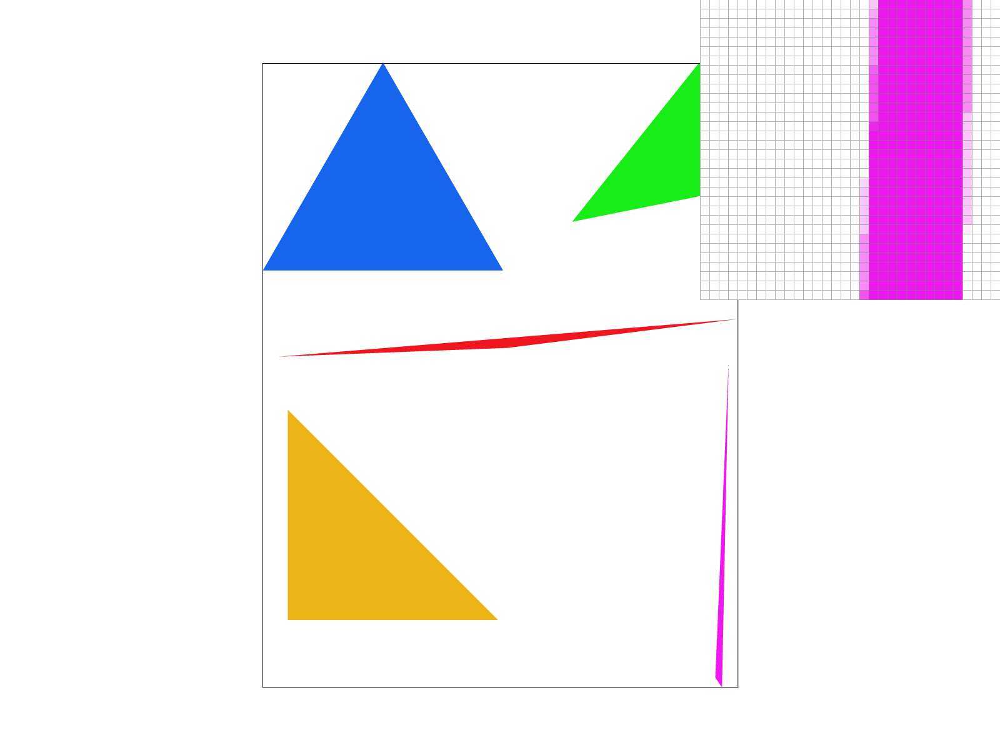

Overview
In this project, I built a basic rastorization pipeline for SVG that draws triangles with antialiasing techniques, textures, gradients, and more. We have implemented the mipmap technique for textures and use barycentric coordiantes to render textures and colors onto the triangles. We have focused on performance by implementing a hyper-fast triangle drawing algorithm that essentially approaches the upper limit of speed.
This website is hosted at: cal-cs184-student.github.io/hw-webpages-sp24-arjunpat/hw1/
Section I: Rasterization
Part 1: Rasterizing single-color triangles
My code works as follows: it computes a bounding box of the triangle using the given coordinates. It then starts at the first line and computes the intersection to the next line of the triangle. It jumps to that intersection. It now computes the next intersection with the next line of the triangle. It will fill in the given color until that next intersection and then move to the next line. This results in an algorithm that is often about 5x faster than rasterizing a triangle using a simple test in all pixels in the bounding box because calculations only need to be performed twice per line.
Here are time comparisons at 16 samples per image:| My Code | Standard Bounding Box Impl. |
| ~35 ms | ~180 ms |
Part 2: Antialiasing triangles
To supersample, I made my sample buffer sample_rate times bigger. I then rasterized my triangles in this larger buffer by multiplying all of the coordinates by sqrt_sample_rate. In the resolve_to_framebuffer() function, I take the average of the sample_rate pixels which are grouped together in square blocks. Supersampling is useful because it reduces jaggies and results in a nicer looking image. Below, we have the images at 1, 4, and 16 sample rate, respectively. We see this improvement because we are introducing a gradient for areas that are normally binary colored.
Part 3: Transforms
My robot is lifting weights and getting HUGE. Take a look:Section II: Sampling
Part 4: Barycentric coordinates
Barycentric coordinates allow us to index coordinates from the corners of the triangle. We can think of alpha, beta, and gamma (the barycentric coordiantes) to be some weight of the distance from each of the corners s.t. alpha + beta + gamma = 1 and alpha, beta, gamma >= 0. Look at the below triangle png for an example of what this looks like when we apply a gradient using barycentric coordiantes:Here is the color wheel (basic/test7.svg):
Part 5: "Pixel sampling" for texture mapping
To sample from a texture, we have some function that maps (x, y) coordiantes of pixels to (u, v) coordinates of the texture. (u, v) may not be integers; they may be some decimal. We have two options. One is we can round (u, v) to the nearest pixel (to the nearest integers). Other option is we can take some sample of the nearest four pixels weighted by how close (u, v) is to each respective pixel. We have implemented both methods for this problem.|
|
|
|
|
|
When viewing textures at sharp angles, especially along edges or diagonals, bilinear filtering tends to produce smoother transitions between texels because it averages the colors of the nearest four texels. Therefore, we generally see that bilinear produces better results at the expense of reduced computational efficiency. The examples above aren't especially harsh angles, so we don't see terrible results when using nearest.
Part 6: "Level sampling" with mipmaps for texture mapping
When using a mipmap, we have to decide on a mipmap level to use for each pixel. Many pixels will not fall squarely on one mipmap and may fall in between two levels. We have a few options for dealing with this: 1. we can always choose level 0 (no downsampling) 2. we can always choose the nearest level (int level = round(level_float)) 3. we can interpolate between the two levels by getting a sample at both levels and interpolating between the colors we receive.In this project, we have implemented all three. Samples per pixel is highly effective at reducing antialiasing. Mipmap pixel sampling is very important when rasterizing textures at sharp angles, however some of the work pixel sampling is already completed if some amount of level sampling is used. Level sampling will already downsample the texture which will mean that the mipmap pixel sampling will be less effective at reducing antialiasing after using nearest mipmap sampling. Samples per pixel is the most computationally and memory inefficient, requiring you to do sample_rate times more work per frame and use sample_rate times more memory. Mipmap pixel and mipmap sampling are all a constant addition in compute time per pixel and do not require any additional memory. It will be a matter of testing and personal preference to determine which settings to use.
|
|

|
|
|
|
Section III: Art Competition
If you are not participating in the optional art competition, don't worry about this section!